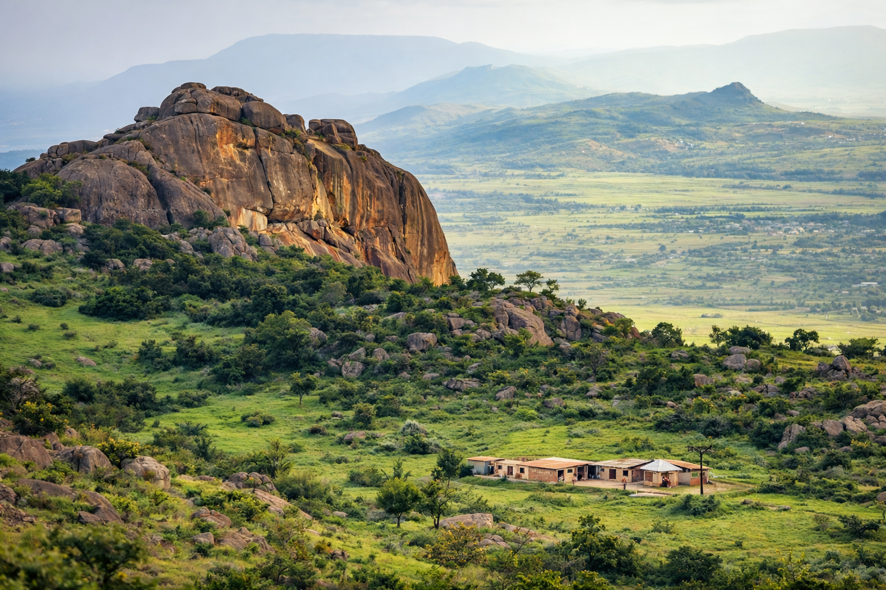

Vallée d'Ezulwini
65k
Mlilwane Wildlife Sanctuary
Pionnier de la conservation, idéal pour le vélo et la randonnée parmi les zèbres

RetourUne monarchie authentique au cœur des montagnes majestueuses
L'Eswatini, anciennement Swaziland, est l'un des plus petits pays d'Afrique, mais l'un des plus riches en expériences. Ce royaume enclavé entre l'Afrique du Sud et le Mozambique offre une diversité de paysages surprenante, des savanes du "lowveld" aux sommets granitiques du "highveld". Réputé pour sa stabilité et la préservation de ses traditions royales, comme les célèbres danses Umhlanga, l'Eswatini est également un sanctuaire pour la faune sauvage. Ses parcs nationaux, accessibles et intimes, permettent d'observer rhinocéros noirs et lions dans un cadre naturel exceptionnel, tandis que son artisanat d'une finesse rare témoigne de la créativité de son peuple.
Découvrez les 15 joyaux du Royaume du Ciel
Pionnier de la conservation, idéal pour le vélo et la randonnée parmi les zèbres

Le plus grand parc du pays, refuge des lions, éléphants et rhinocéros blancs

Sanctuaire exclusif pour les rhinocéros noirs et les espèces menacées

Musée vivant et danses traditionnelles sibhaca au pied des cascades

Des paysages de montagne sauvages et la plus haute tyrolienne du pays

Usine de verre soufflé recyclé de renommée mondiale et boutiques d'artisanat

Un impressionnant barrage de 115m de haut entouré de collines pittoresques

Atelier créatif de bougies sculptées à la main et marché artisanal vibrant

Région montagneuse célèbre pour ses forêts et son histoire minière

Le coeur battant du commerce local, pour une immersion authentique

Un paradis tropical de cascades et de sentiers de randonnée paisibles

Une biodiversité incroyable entre plaines et falaises escarpées
La résidence officielle de la Reine Mère et centre spirituel du royaume
Le deuxième plus grand monolithe de granit au monde après l'Ayers Rock
La 'Vallée du Paradis', centre touristique majeur avec hôtels et artisanat
Une monarchie millénaire au coeur des traditions bantoues.
L'Eswatini est l'une des dernières monarchies absolues au monde, où les traditions sont vécues au quotidien. La culture swazie est profondément ancrée dans le respect des ancêtres et de la royauté. Les cérémonies annuelles comme l'Umhlanga (danse des roseaux) et l'Incwala (fête de la royauté) sont des moments de ferveur nationale uniques. Cette identité forte s'exprime également à travers un artisanat de renommée internationale : le travail du verre, de la cire et du tissage fait de l'Eswatini un haut lieu de la création africaine contemporaine.
Une culture centrée sur le roi (Ngwenyama) et la reine mère (Ndlovukazi), garants de l'unité nationale.
Le verre soufflé de Ngwenya et les bougies de Malkerns exportés dans le monde entier.
Le Sibhaca et les chants polyphoniques qui rythment les grandes cérémonies du royaume.
Un peuple fier qui a su préserver son indépendance et sa culture face aux influences coloniales.

L'excellence créative de l'Eswatini. Du verre soufflé aux bougies sculptées.
 Art
Art
Pièce unique réalisée à partir de verre 100% recyclé par les maîtres verriers de Ngwenya.
 Créatif
Créatif
Bougie en forme d'animal (rhino, éléphant) sculptée à la main avec la technique du "millefiori".
 Tradition
Tradition
Vannerie fine réalisée à partir d'herbe de montagne séchée, célèbre pour ses motifs géométriques.
Colliers et bracelets colorés, symboles de statut et d'identité culturelle.
Statues et objets décoratifs taillés dans le bois de jacaranda par les sculpteurs locaux.
Tissu enveloppant aux motifs royaux, symbole du vêtement traditionnel swazi.

Ezulwini, Luxe & Golf

Ezulwini, Resort Familial

Ezulwini, Vue Panoramique

Mhlambanyatsi, Charme Anglais

Piggs Peak, Nature & Lodge

Matsapha, Jardin Tropical
La cuisine swazie est une célébration simple et savoureuse des produits de la terre, riche en maïs et légumes.
Bouillie épaisse de maïs et de haricots, servie avec de la viande ou des légumes.
Bouillie de maïs fermentée, légèrement acide et très rafraîchissante.
Viande mijotée longuement avec des oignons, des tomates et des épices locales.
Poulet fermier grillé ou mijoté, servi avec une sauce généreuse.
Lait caillé traditionnel, souvent servi avec du maïs moulu (Phutu).
Pain de maïs frais et légèrement sucré, cuit à la vapeur ou au four.
Salade d'avocats frais avec une touche de jus de citron et de gingembre.
Purée de citrouille mélangée avec de la farine de maïs, une douceur traditionnelle.
Ananas, mangues et litchis frais provenant des vergers fertiles du pays.
Bière traditionnelle brassée à partir de sorgho et de maïs, pilier des fêtes.
Différentes variétés de feuilles vertes (Umngomeni) sautées avec des cacahuètes pilées.
Infusion rouge rafraîchissante, servie chaude ou glacée avec du miel sauvage.
Vivez l'incroyable ferveur des traditions swazies à travers ses cérémonies royales.
La plus célèbre cérémonie (Août/Septembre) où des milliers de jeunes filles dansent pour la Reine Mère.
La cérémonie la plus sacrée du royaume (Décembre/Janvier), centrée sur le roi et le renouveau national.
Un festival international de musique et d'arts (Mai) prônant le changement social et la créativité.
La période idéale pour le safari. Les animaux se rassemblent autour des points d'eau et le climat est frais et ensoleillé. C'est aussi la saison de l'Umhlanga.
Les paysages sont verdoyants et magnifiques. C'est le moment idéal pour l'observation des oiseaux et pour assister à la cérémonie de l'Incwala.
Pays paisible et sûr. Vigilance habituelle contre les petits vols dans les villes. Évitez de conduire de nuit en raison des animaux errants.
Prévention contre le paludisme recommandée pour le lowveld. Buvez de l'eau en bouteille. Bons services médicaux à Mbabane.
Exemption de visa pour de nombreuses nationalités (UE, USA, Commonwealth) pour moins de 30 jours. Passeport valide 6 mois après le retour.
Lilangeni (SZL), à parité avec le Rand sud-africain (ZAR). Le Rand est accepté partout dans le pays. Cartes bancaires largement acceptées.
Expert Safari & Faune
Guide passionné avec 15 ans d'expérience à Hlane et Mkhaya, spécialiste des rhinocéros.
Experte Culture & Artisanat
Spécialiste des traditions swazies et de l'artisanat local, Nokwanda vous fera découvrir l'âme du royaume.
Guide Randonnée & Nature
Expert des sentiers de Malolotja et de Sibebe, Thabo vous accompagnera vers les plus beaux points de vue.